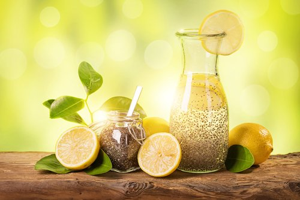

Obst und Beeren
Und was wissen wir über die Vorteile von Obst und Beeren? Lassen Sie uns versuchen, die Liste der Früchte zu durchgehen und zu sehen, was all diese wunderbaren Dinge bewirken.APRIKOSEN. Reich an Mineralien und Spurenelementen - Kalium, Eisen, enthalten Folsäure und Pantothensäure, Lycopin und Beta-Carotin. Übrigens ist all dies in getrockneten Früchten enthalten und schützt vor Krebs, was sich günstig auf die Schleimhäute und die Haut auswirkt. Aprikosen verbessern die Arbeit des Herz-Kreislauf-Systems, mildern den Husten und wirken wohltuend auf die Bronchien. Sie sind eine ausgezeichnete Quelle für Folsäure für schwangere Frauen. Und sie helfen auch dabei, überschüssiges Wasser aus dem Gewebe zu entfernen, was zu Gewichtsverlust führt.Ananas Frische Früchte enthalten viel Magnesium, Kalium, Phosphor, Eisen, Mangan, Kupfer, Zink, Jod, Vitamin C, Carotin, das Bromelin-Enzym. Ananas bekämpft Bakterien und Viren, senkt die Temperatur und verbessert den Appetit. Ein Stück Ananas vor dem Essen löst das Problem der Verstopfung. Ananas sind nützlich bei Entzündungen, Thrombosen und Brüchen. Ananassaft ist sehr nützlich für Krebspatienten und bei vermindertem Säuregehalt von Magensaft. Schwangere Frauen Ananas und ihren Saft sind jedoch nicht zu empfehlen!ORANGE. Es ist eine ausgezeichnete Quelle für Vitamin B und C, Kalium, Kalzium, Magnesium, Phosphor, Beta-Carotin und Selen. Orangen regen den Appetit an und verbessern die Stimmung, verbessern die Versorgung der Organe und Gewebe mit Sauerstoff, senken den Blutdruck und den Cholesterinspiegel, schützen die Zellen vor freien Radikalen und stärken im Allgemeinen das Immunsystem.
Buy now!